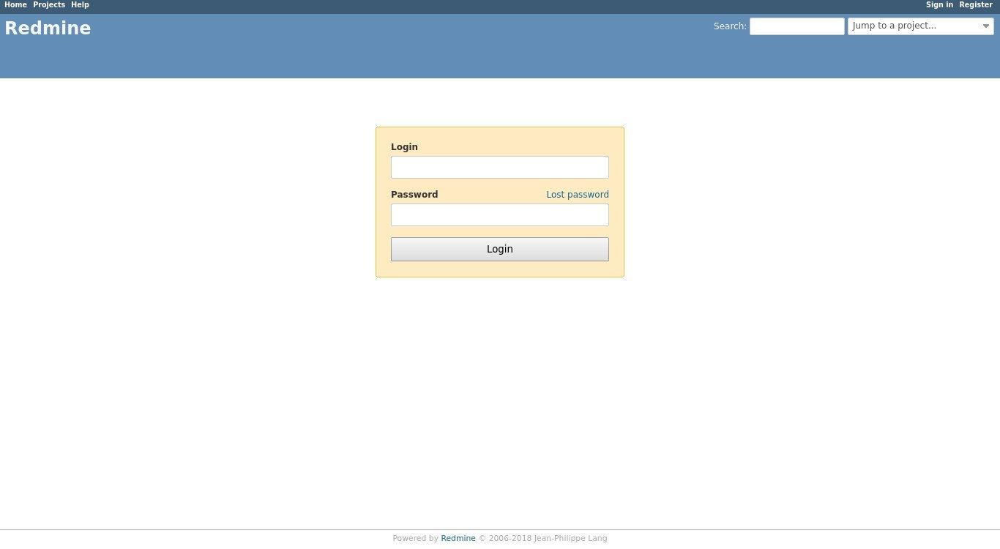
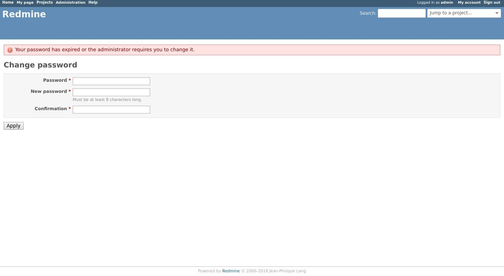

在 CentOS 8 上安装和配置 Redmine
Redmine 是一个免费的开源项目管理和问题跟踪应用程序。它是跨平台和跨数据库的，建立在 Ruby on Rails 框架之上。
Redmine 能够支持对多个项目进行支持，包括 Wiki ，问题跟踪，论坛，日历，电子邮件通知等。
本教程说明了如何在 CentOS 8 上安装和配置 Redmine 的最新版本。我们将使用 MariaDB 作为数据库后端，而使用 Passenger + Apache 作为 Ruby 应用程序服务器。
先决条件
确保满足以下先决条件：
- 指向公共服务器 IP 的域名。
- 以 root 用户或具有 sudo 特权的用户身份登录。
创建一个 MySQL 数据库
Redmine 支持 MySQL/MariaDB ， Microsoft SQL Server ， SQLite 3 和 PostgreSQL 。我们将使用 MariaDB 作为数据库后端。
如果您的 CentOS 服务器上没有安装 MariaDB 或 MySQL ，则可以按照以下说明安装 MariaDB。
使用以下命令登录到 MySQL Shell ：
sudo mysql
在 MySQL Shell 中，运行以下 SQL 语句创建一个新数据库，一个新用户，并授予该用户对该数据库的访问权限：
CREATE DATABASE redmine CHARACTER SET utf8;
GRANT ALL ON redmine.* TO 'redmine'@'localhost' IDENTIFIED BY 'change-with-strong-password';
确保使用您自己的密码更改 change-with-strong-password 。
完成后，退出 MySQL Shell ：
EXIT;
安装 Passenger ， Apache 和 Ruby
Passenger 是一款适用于 Ruby ， Node.js 和 Python 的快速，轻量级的 Web 应用程序服务器，可以与 Apache 和 Nginx 集成。我们将 Passenger 安装为 Apache 模块。
启用 EPEL 存储库：
sudo dnf install epel-release
sudo dnf config-manager --enable epel
启用存储库后，更新软件包列表并安装 Ruby ， Apache 和 Passenger ：
sudo dnf install httpd mod_passenger passenger passenger-devel ruby
启动 Apache 服务并启用随服务器自启动：
sudo systemctl enable httpd --now
创建新的系统用户
创建一个主目录为 /opt/redmine 的新用户和组，该目录将运行 Redmine 实例：
sudo useradd -m -U -r -d /opt/redmine redmine
将 apache 用户添加组redmine 并更改 /opt/redmine 目录权限以便 Apache 可以访问它：
sudo usermod -a -G redmine apache
sudo chmod 750 /opt/redmine
安装 Redmine
在撰写本文时， Redmine 的最新稳定版本是版本 4.1.0 。
在继续下一步之前，请访问 Redmine 下载页面以查看是否有较新版本。
安装构建 Redmine 所需的 GCC 编译器和库：
sudo dnf group install "Development Tools"
sudo dnf install zlib-devel curl-devel openssl-devel mariadb-devel ruby-devel
确保您以 redmine 用户身份运行以下步骤：
sudo su - redmine
1.下载 Redmine
使用 curl 下载 Redmine 压缩文件：
curl -L http://www.redmine.org/releases/redmine-4.1.0.tar.gz -o redmine.tar.gz
下载完成后，解压缩存档：
tar -xvf redmine.tar.gz
2.配置 Redmine 数据库
复制 Redmine 自带的示例数据库配置文件：
cp /opt/redmine/redmine-4.1.0/config/database.yml.example /opt/redmine/redmine-4.1.0/config/database.yml
使用文本编辑器打开 /opt/redmine/redmine-4.1.0/config/database.yml 文件：
nano /opt/redmine/redmine-4.1.0/config/database.yml
搜索 production 部分，然后输入我们之前创建的 MySQL 数据库和用户信息：
production:
adapter: mysql2
database: redmine
host: localhost
username: redmine
password: "change-with-strong-password"
encoding: utf8mb4
完成后，保存文件并退出编辑器。
3.安装 Ruby 依赖项
切换到 redmine-4.1.0 目录并安装 Ruby 依赖项：
cd ~/redmine-4.1.0
gem install bundler --no-rdoc --no-ri
bundle install --without development test postgresql sqlite --path vendor/bundle
4.生成密钥并迁移数据库
运行以下命令以生成密钥并迁移数据库：
bundle exec rake generate_secret_token
RAILS_ENV=production bundle exec rake db:migrate
配置 Apache
切换回您的 sudo 用户并创建以下 Apache 虚拟主机 文件：
exit
sudo nano /etc/httpd/conf.d/example.com.conf
文件 /etc/httpd/conf.d/example.com.conf
<VirtualHost *:80>
ServerName example.com
ServerAlias www.example.com
DocumentRoot /opt/redmine/redmine-4.1.0/public
<Directory /opt/redmine/redmine-4.1.0/public>
Options Indexes ExecCGI FollowSymLinks
Require all granted
AllowOverride all
</Directory>
ErrorLog /var/log/httpd/example.com-error.log
CustomLog /var/log/httpd/example.com-access.log combined
</VirtualHost>
不要忘记用您的域名替换 example.com 。
通过键入以下命令重新启动 Apache 服务：
sudo systemctl restart httpd
使用 SSL 配置 Apache
如果您的域没有受信任的 SSL 证书，则可以按照以下说明生成免费的 “Let’s Encrypt SSL” 证书。
生成证书后，按如下所示编辑 Apache 配置 /etc/httpd/conf.d/example.com.conf ：
sudo nano /etc/httpd/conf.d/example.com.conf
<VirtualHost *:80>
ServerName example.com
ServerAlias www.example.com
Redirect permanent/https://example.com/
</VirtualHost>
<VirtualHost *:443>
ServerName example.com
ServerAlias www.example.com
Protocols h2 http:/1.1
<If "%{HTTP_HOST} == 'www.example.com'">
Redirect permanent/https://example.com/
</If>
DocumentRoot /opt/redmine/redmine-4.1.0/public
ErrorLog /var/log/httpd/example.com-error.log
CustomLog /var/log/httpd/example.com-access.log combined
SSLEngine On
SSLCertificateFile /etc/letsencrypt/live/example.com/fullchain.pem
SSLCertificateKeyFile /etc/letsencrypt/live/example.com/privkey.pem
<Directory /opt/redmine/redmine-4.1.0/public>
Options Indexes ExecCGI FollowSymLinks
Require all granted
AllowOverride all
</Directory>
</VirtualHost>
不要忘记用您自己的域名域替换 example.com 并为 SSL 证书文件设置正确的路径。在上面的配置中，所有的 HTTP 请求都将重定向到 HTTPS 。
访问 Redmine
打开浏览器，键入您的域名，如果安装成功的话，将出现类似于以下的屏幕：

Redmine 的默认登录凭据为：
- 用户名： admin
- 密码： admin
首次登录时，将提示您更改密码，如下所示：

更改密码后，您将被重定向到用户帐户页面。
如果无法访问该页面，则可能是防火墙阻止了 Apache 端口。
使用以下命令打开必要的端口：
sudo firewall-cmd --permanent --zone=public --add-port=443/tcp
sudo firewall-cmd --permanent --zone=public --add-port=80/tcp
sudo firewall-cmd --reload
结论
您已在 CentOS 系统上成功安装 Redmine 。现在，您应该查看 Redmine 文档，并了解有关如何配置和使用 Redmine 的更多信息。